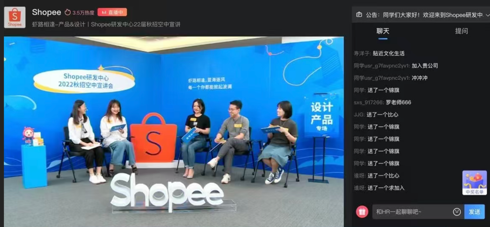

01 / 看行为，不看履历标签
让新的表现修正第一印象
一次面试中，我认可候选人对细节体验的处理，对他的复杂业务能力仍有疑问，于是留到笔试继续验证。他主动了解专业背景，为一个问题提出多个方案并比较优劣，还质疑现有功能是否必要，通过简单访谈核实使用情况——原先没看清的能力，在这些具体行为里有了更明确的依据。
也有相反的情况：面谈初步满意，笔试复核却没有通过。流程表达很熟练，技术背景的理解和方案推导仍不够深入。这比直接说「不熟悉」更让我警惕：前者我要花时间分辨他到底会多少，后者我知道下一步该验证什么。
我对招人的判断，是逐步形成的：做虚线 Leader 时，招人不归我管，招来什么人、我用什么人，只能根据每个人的特点安排工作；后来团队并入 Infra，我以专家身份负责招聘的专业面试轮，才真正参与人选的判断。这段经历让我知道，识人的标准必须在带教和使用里反复校准。
02 / 主动性与诚实
面试里，我看两件事
面试里，我重点看两件事：
- 主动性 · 拿到题目怎么做
- 只完成题目的要求，还是主动核实题目之外的信息、为问题提出别的解法。前者能执行，后者能在结果不明确时自己找路。
- 诚实 · 面对不清楚的地方
- 直接说「我还没有足够信息，我会核实后补充」，比绕过去或硬给结论更可信——一句话里能看到他知道缺口、知道去哪找答案，也敢给出时间。
我自己的评价也遵循这一点：说清楚已经看到了什么、哪些还不能确认。不同责任范围需要不同证据：初级角色看基础与学习迁移，资深角色要能完整负责复杂问题、推进落地。可靠地完成自己的项目，与协调其他人的工作、处理分歧、持续提供支持，需要观察的内容不同。
03 / 责任优先于表面表现
录用以后判断也没有结束
入职后的实际任务，会补充面试时看不到的信息。带教和日常协作里，我重点看四件事：
- 出错后的第一反应
- 是补上缺口，还是归因外部？一次失误是巧合，同样的事情上会不会再犯，才说明他消化了这次教训。
- 只给结果时的主动性
- 能不能自己拆出路径、在关键节点对齐？对前一种，我评审他的方案；对后一种，我等于在替他做方案。
- 面对未知的诚实
- 敢不敢说「不知道」、给不给核实期限？装懂的人，我要花双倍时间分辨哪里是真、哪里是假。
- 接任务时的边界
- 说得清「我能做到哪一步、哪一步需要支持」吗？说不清边界的人，会把风险藏在自己手里，直到扛不住才暴露。
有位成员喜欢独立钻研，遇到困难也不及时同步，往往很晚才求助。他不是不负责，但过程信息藏在自己手里，风险就只压在他一个人身上。后来我给他安排固定产品线，并约定在关键节点主动同步——独立判断要保留，及时暴露风险也要成为习惯。
四件事看起来分散，指向的其实是同一件事：这个人愿不愿意对结果负责。技能和完成度，带教补得上；愿不愿意负责，几乎补不了。我也遇到过性格宜人、态度积极的成员，协作氛围很好，交付却没有达到预期——宜人不是能力，态度好也不是交付。说得好的长处，还是要看有没有被真实的工作行为证明。
面试结论不应该成为贴在一个人身上的固定标签。内向、口音、初次面试紧张，都不能代替一个问题的答案：他能不能澄清信息、回应分歧、推动协作。有些人没有被当前岗位选择，在另一类产品或团队里可能更合适——评价能说明具体缺口、也能说明团队当时提供不了什么支持，才对双方有用。
2021 年秋招直播 · 面向 2022 届

相关文件涉及企业内部信息，可在面试交流中结合脱敏处理后的材料展开介绍。